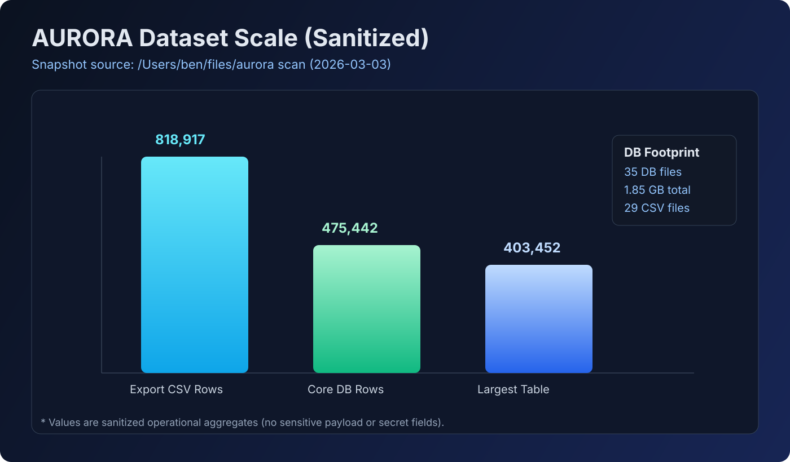
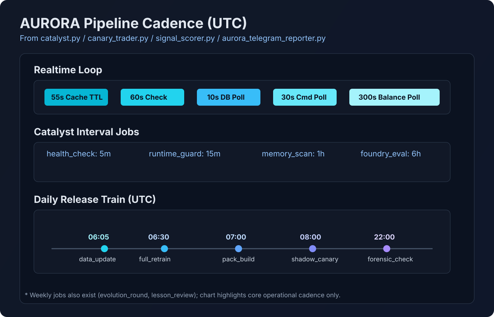
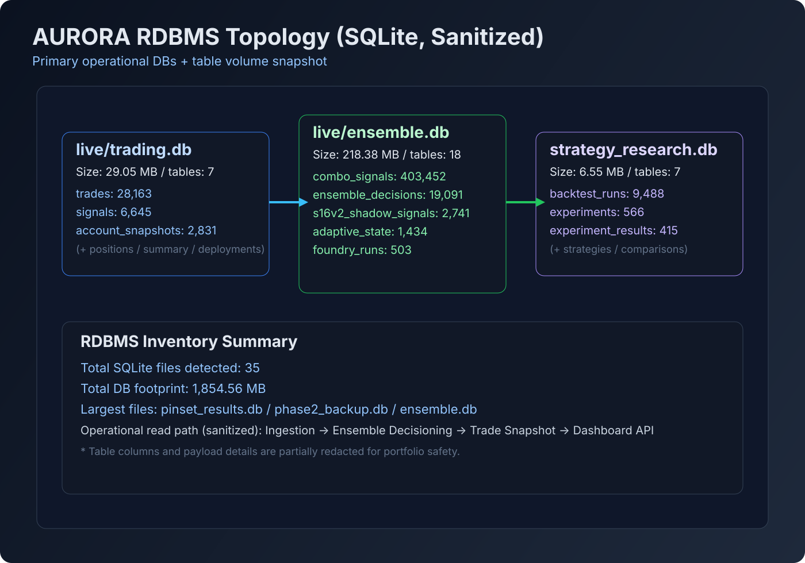

AURORA 운영 자동화 (Private Deep Summary)
민감정보를 제외한 운영·데이터·검증 중심 요약 (2026-03-03 스캔 기준)
운영 흐름: 검증 → 제한 배포 → 운영 적용
API 표면: 총 78 routes ( /api 72 )
DB 인벤토리: 35 files / 1.85GB
핵심 데이터 행 수: 475,442+
프로젝트 배경
모델 실험 결과를 실서비스로 옮길 때 가장 큰 리스크는 “성능 수치만 믿고 운영 전환”하는 구간입니다. AURORA는 이 구간을 줄이기 위해, 실험·검증·운영을 분리하고 승격 조건을 명시하는 데 집중했습니다.
핵심 문제
- 실험 결과와 운영 정책의 단절
- run 단위 추적 키 누락 시 원인 분석 지연
- 승격 조건 불명확 시 과도한 리스크 노출
핵심 운영 지표 (정량 스냅샷)
Export CSV Bundle
818,917 rows
Core DB Rows (3계층 합계)
475,442 rows
Largest Table
combo_signals 403,452
Live Dashboard API
54 /api routes
R&D Dashboard API
18 /api routes
SQLite Footprint
35 files / 1,854.56 MB
근거 파일: /Users/ben/files/aurora/live/dashboard.py, /Users/ben/files/aurora/scripts/strategy_rd_dashboard.py, /Users/ben/files/aurora/live/*.db, /Users/ben/files/aurora/exports/**/*.csv
실행 방식 (What we changed)
승격 프로토콜
검증 → 제한 배포 → 운영 적용 단계 강제
검증 → 제한 배포 → 운영 적용 단계 강제
검증 게이트
정책 위반/가드레일 누락 시 배포 차단
정책 위반/가드레일 누락 시 배포 차단
추적 체계
run_id 중심 전파와 로그 연결성 강화
run_id 중심 전파와 로그 연결성 강화
운영 문서화
상태/판단/리스크/백테스트 기준 문서 고정
상태/판단/리스크/백테스트 기준 문서 고정
대규모 데이터셋 차트 (Sanitized)

| Dataset | Rows | 비고 |
|---|---|---|
| ensemble_combo_signals.csv | 403,453 | 가장 큰 시그널 집계 파일 |
| pinset_runs.csv | 152,017 | 핀셋 실험 러닝 로그 |
| mega_replay_trades.csv | 33,753 | 리플레이 트레이드 스냅샷 |
| trading_signals.csv | 6,445 | 신호 스트림 누적 |
운영 플로우차트 (Sanitized)
검증
정책/가드레일 확인
정책/가드레일 확인
→
제한 배포
운영 리스크 점검
운영 리스크 점검
→
운영 적용
상태 모니터링/회고
상태 모니터링/회고
API 표면 차트

| 대시보드 | Total Routes | /api Prefix | 근거 |
|---|---|---|---|
| live/dashboard.py | 57 | 54 | @app.route(...) 데코레이터 파싱 |
| strategy_rd_dashboard.py | 21 | 18 | @app.route(...) 데코레이터 파싱 |
| 합계 | 78 | 72 | 포트폴리오용 공개 수치 |
※ 도메인 특화 엔드포인트 의미는 노출하지 않고 운영 범주 단위로만 공개합니다.
데이터 파이프라인 주기 차트 (UTC)

| 주기 | 설명 | 근거 파일 |
|---|---|---|
| 55~60초 | 신호 계산 캐시 TTL + 메인 체크 루프 | live/signal_scorer.py, live/canary_trader.py |
| 10~30초 | DB/명령 폴링 루프 | live/aurora_telegram_reporter.py |
| 5분/15분/1시간/6시간 | 헬스체크/런타임가드/메모리스캔/파운드리 평가 | live/catalyst.py |
| 06:05→06:30→07:00→08:00 | 데이터 업데이트→재학습→팩빌드→섀도우/카나리 | live/catalyst.py |
내부 데이터 구조 (Sanitized)
Input Envelope
timestamp, run_id, source_tag
timestamp, run_id, source_tag
Feature Bundle
정규화된 지표 묶음(원본 비공개)
정규화된 지표 묶음(원본 비공개)
Decision Record
gate_result, reason_code, policy_version
gate_result, reason_code, policy_version
Ops Snapshot
status, risk_level, rollback_key
status, risk_level, rollback_key
※ 원본 데이터 포맷/도메인 특화 입력 값/수집 소스 상세는 공개하지 않고, 운영 구조만 추상화해 설명합니다.
RDBMS 전체 맵 (Sanitized)

| DB | Size | Tables | 핵심 테이블/행수 |
|---|---|---|---|
live/trading.db | 29.05 MB | 7 | trades 28,163 / signals 6,645 / account_snapshots 2,831 |
live/ensemble.db | 218.38 MB | 18 | combo_signals 403,452 / ensemble_decisions 19,091 / foundry_runs 503 |
experiments/strategy_rd/strategy_research.db | 6.55 MB | 7 | backtest_runs 9,488 / experiments 566 / experiment_results 415 |
| Inventory 합계 | 1,854.56 MB | 35 files | 운영/실험/백업 DB 포함 |
데이터 규모 & 학습/검증 깊이 (공개 가능 범위)
- 코드베이스 관측 규모: Python 파일 약 160개, 문서 약 58개(로컬 스캔 기준)
- 검증 방식: 정책/히스토리/스킬 거버넌스 검증 스크립트 기반
- 학습 깊이: 단순 모델 튜닝이 아니라 운영 전환·리스크 통제까지 포함한 end-to-end 실험
- 추가 리서치: 포트폴리오 고도화 과정에서 30,000개 안건 생성·점수화·합의 파이프라인 수행
※ 민감한 원본 데이터 크기/정확한 정량 운영 지표/운영 키 값은 보안상 공개하지 않습니다.
서버/운영 상태 관점 (포트폴리오용)
- 운영 상태 점검 API/대시보드 기반으로 헬스체크 루프를 구성
- 실패 시 원인 구간을 좁힐 수 있는 검증 우선 구조 유지
- 운영 파라미터 변경 시 문서/대시보드 동기화 원칙 적용
파일 트리/구조 (Sanitized)

결론
AURORA에서의 핵심은 “잘 맞는 모델”보다 “안전하게 운영되는 시스템”입니다. PM/운영 관점에서 실험-검증-승격-회복까지 닫힌 루프를 만드는 것이 실제 성과로 이어진다는 점을 검증했습니다.